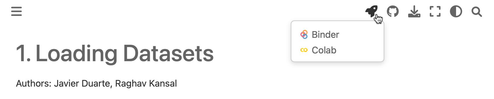

Introduction • Setup • Links • Credits


CMS Machine Learning Data Analysis School (DAS) Short Exercise#
Introduction#
This is a set of tutorials for the LPC Data Analysis School (DAS) Machine Learning Short Exercise.
They are intended to show you how to build machine learning models in python, using xgboost, Keras, TensorFlow, and PyTorch, and use them in your ROOT-based analyses.
We will build event-level classifiers for differentiating VBF Higgs and standard model background 4 muon events and jet-level classifiers for differentiating boosted W boson jets from QCD jets using BDTs, and dense and convolutional neural networks.
We will also explore more advanced models such as graph neural networks (GNNs), variational autoencoders (VAEs), and generative adversarial networks (GANs) on simple datasets.
Setup#
Vanderbilt Jupyterhub (Recommended!)#
The recommended method for running the tutorials live is the Vanderbilt Jupyterhub, follow the instructions here.
FNAL LPC#
Not as well supported, but instructions are here.
Locally#
All these notebooks can be run on your local machine as well. It can often be useful to test your models and pipelines locally, but it is not recommended to run full trainings as these can be resource-intensive.
To run locally, run these commands from your terminal:
# Download the setup bash file for your machine from here https://github.com/conda-forge/miniforge#mambaforge
# e.g. wget https://github.com/conda-forge/miniforge/releases/latest/download/Mambaforge-Linux-x86_64.sh
# Install: (the mamba directory can end up taking O(1-10GB) so make sure the directory you're using allows that quota)
chmod u+x Mambaforge-Linux-x86_64.sh
./Mambaforge-Linux-x86_64.sh # follow instructions in the installation
git clone https://github.com/FNALLPC/machine-learning-das/
cd machine-learning-das
mamba create -f environment.yml
mamba activate machine-learning-das
jupyter lab # this will create a JupyterLab instance from which you can run all the notebooks.
Binder#
You can launch this repository in a “Binder” instance using:  ,
or for a specific notebook by navigating to the rocket icon on the website and clicking on the Binder option.
,
or for a specific notebook by navigating to the rocket icon on the website and clicking on the Binder option.

This may be a more convenient, but it has not been well tested and the set-up time can be slow.
Setup#
Google Colab#
Each notebook can also be launched in a Google Colab instance by clicking “Google Colab” option in the menu bar above. To use this, you will have to install any extra libraries needed for the tutorial yourself and re-download the relevant datasets each time.
Links#
The indico page for the DAS is: https://indico.cern.ch/e/cmsdas2024
The Mattermost for live support is: https://mattermost.web.cern.ch/cmsdaslpc2024/channels/shortexmachinelearning
The datasets we will use are located here: 
Credits#
This project is created using the excellent open source Jupyter Book project and the executablebooks/cookiecutter-jupyter-book template.